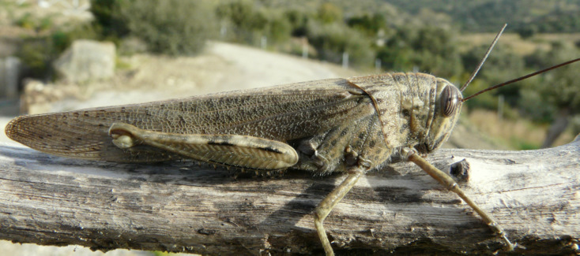
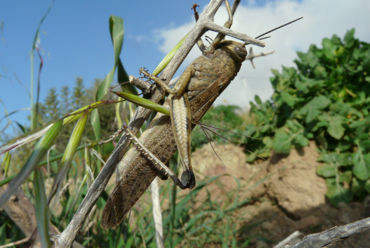
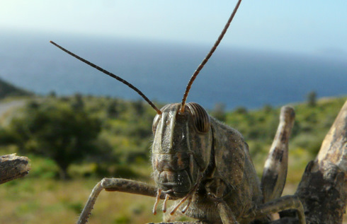
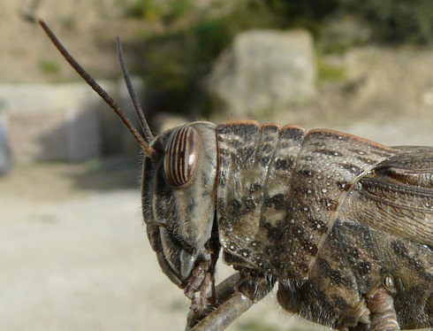
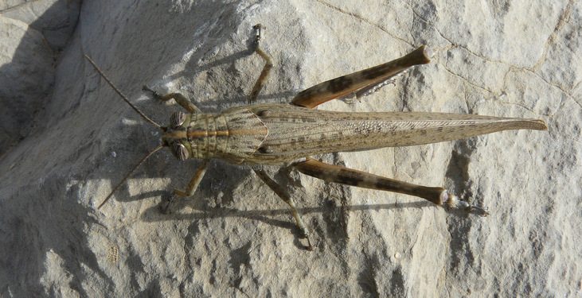
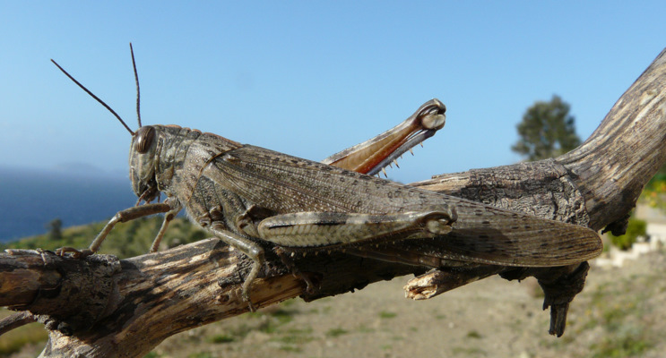
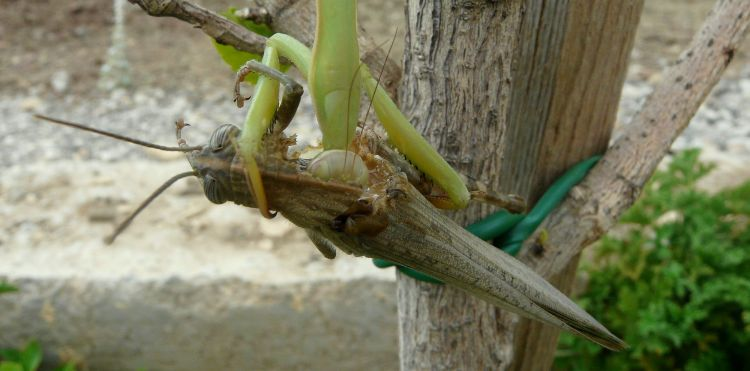
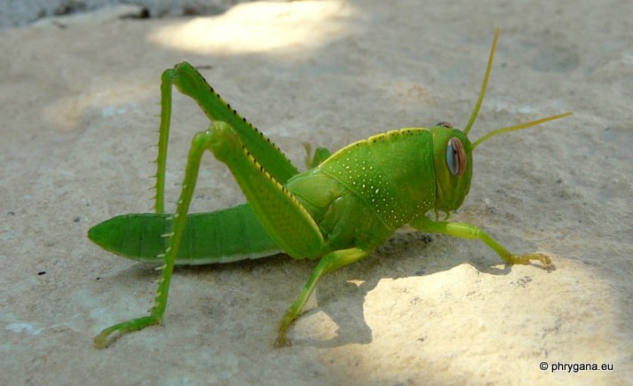
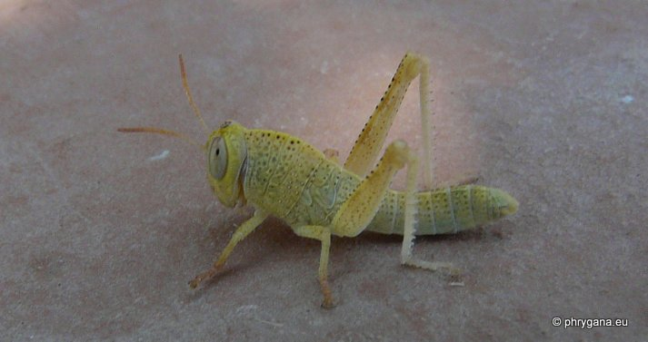
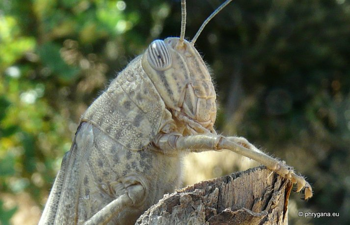

| PHRYGANA | Fauna | Flora | Galles | liste des espèces |
contact -
info - commentaires phrygana1 (at) gmail.com |
| Particularités crétoises | nouveautés | Mines | ressources naturelles |
| Anacridium aegyptium (Linnaeus 1764) |
| 132 | Fauna | ORTHOPTERA | ACRIDIDAE | Anacridium Uvarov 1923 |
|
 Anacridium aegyptium Melambes (Agios Giorgos) 05 mars 2010 |
| le Criquet égyptien -- Egyptian Locust -- Ägyptische Wanderheuschrecke -- Locusta egiziana -- Langosta egipcia -- Gaganhoto do Egipto |
| Espèce grande: longueur du corps entre 35 et 50 mm pour le mâle, 50 à 65 mm pour la femelle. Yeux striés. Couleur variant du olive brun au brun cendré ou gris jaunâtre. Petite ligne jaune sur la crête du pronotum. Front perpendiculaire. Fémur avec trois taches brun foncé. Tegmina allongés: 44 - 56 mm chez le mâle, 50 - 64 mm chez la femelle. |
| Juvénile vert vif. 6 à 7 mues. |
| Régime alimentaire: phytophage. N'est pas une espèce causant beaucoup de dégâts. |
| Espèce plurivoltine. Ponte:1 à 2 oothèque(s) dans le sol, chaque oothèque contenant plusieurs dizaines d'oeufs |
| Période de vol: janvier février mars avril mai juin juillet août septembre octobre novembre décembre |
| Chant: espèce silencieuse. |
| Espèce essentiellement arboricole. |
| Statut en Crète: indigène -- native |
| Biotopes en Crète: phrygana, olivaies, garrigue, bords de chemins, garrigues, vignobles, vergers. |
| Distribution: Europe méridionale, Afrique du Nord, Moyen-Orient. |
| Note: vient régulièrement à la lumière. |
| Prédateurs: Mantis religiosa (Linnaeus 1758) |
|
 Anacridium aegyptium Melambes (Agios Giorgos) 05 mars 2010 |
|

 Anacridium aegyptium Melambes (Agios Giorgos) 05 mars 2010 |
|
 Anacridium aegyptium Melambes (Agios Giorgos) 05 mars 2010 |
|
 Anacridium aegyptium Melambes (Agios Giorgos) 05 mars 2010 |
|
 Anacridium aegyptium (Linnaeus 1764) capturé et dévoré vivant par Mantis religiosa (Linnaeus 1758) Melambes (Agios Giorgos) 22 septembre 2011 |
|
 Anacridium aegyptium Melambes (Agios Giorgos) 20 juillet 2012 |
|
 Anacridium aegyptium Melambes (Agios Giorgos) 20 juillet 2012 |
|
 Anacridium aegyptium Melambes (Agios Giorgos) 20 juillet 2012 |
| 31 août 2012 |
| © paul fontaine -- © Phrygana.eu 2007 -- 2013 |